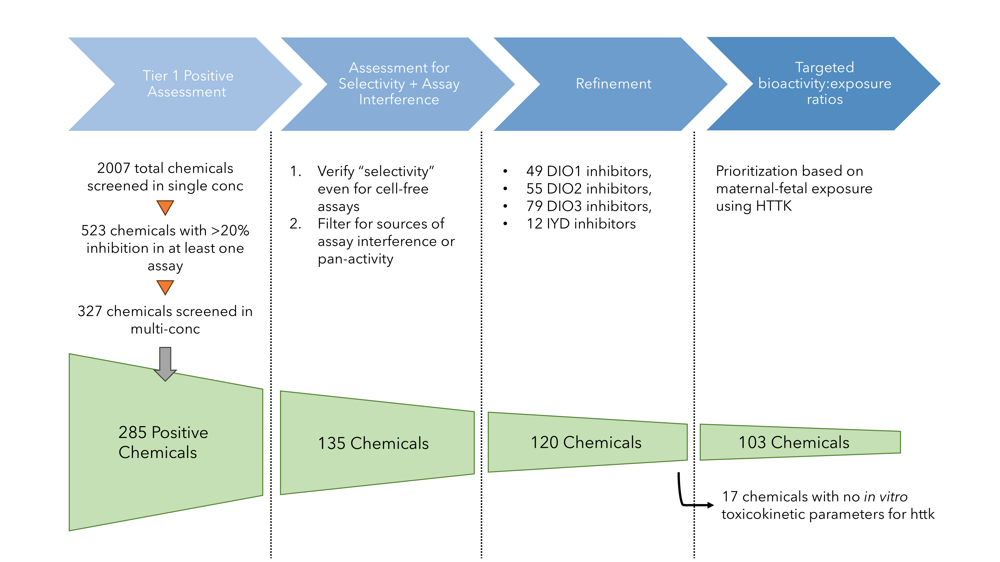

In this vignette, we show how to use the full human gestational model from httk to perform in vitro-in vivo extrapolation (IVIVE) on a relevant in vitro bioactivity dataset. Briefly, this demonstrates how to take thyroid-related in vitro bioactivity data from ToxCast, perform IVIVE using the 3-compartment steady state model and the full human pregnancy model within httk, and compare it with the latest exposure estimates from ExpoCast as a method of prioritization. This is detailed in Truong et al. 2025 (submitted).
Truong et al. 2025 describes a prioritization workflow for thyroid-related bioactivity data related to deiodinase inhibition and applies the full human gestational model to compute administered equivalent doses (AEDs) and bioactivity-to-exposure ratios (BERs) by integrating SEEM3 ExpoCast predictions. The figure below shows an overview of the workflow.

This vignette covers the last step of the workflow “Targeted
bioactivity:exposure ratios”, and the previous three steps are done by
executing deiod_invitrodb_v3_5_processing.R.
This vignette reproduces Figures 9 and 10 from Truong et al. 2025.
This vignette was created with httk v2.6.0 which includes new model functionality (see Simulate full-term human pregnancy model).
We need to load in the processed in vitro bioactivity data.
This was done by deiod_invitrodb_v3_5_processing.R, and
results were saved in the
./data/invitrodb_v3_5_deiod_filtered_httk.RData object.
## Loading objects:
## ac50.dt
## all_dat
## Cmax.times.m
## ecdf.data
## ivive.moe.tb
## max.diff
## max.diff.m
## physchem.tb
## plasma.tissue.bers
## sel
## table7
## table8
## tissue.aeds
## tissue.bersSeveral chunks of code in this vignette have “eval =
execute.vignette” and we set execute.chunk to be FALSE, by default. We
do this to include all the code that was necessary to produce the
figures but was not run when the vignette was built since some of these
chunks take a considerable amount of time and the checks on CRAN limit
how long we can spend building the package. You can still reproduce the
end figures knitting the .Rmd file, since all the necessary and
intermediate data objects are stored in
./data/invitrodb_v3_5_deiod_filtered_httk.RData. If you
want to rerun the whole workflow on your own, you must rerun all code
from top to bottom, either by changing execute.vignette to TRUE or
clicking on the “green arrow” in RStudio.
library(httk)
library(data.table)
library(dplyr)
library(openxlsx)
library(ggpubr)
library(cowplot)
library(ggrepel)
library(latex2exp)
library(viridis)
library(scales)
library(ggstar) # for better discernible shapes including stars## Warning: package 'ggstar' was built under R version 4.4.3Only 50 chemicals have experimental toxicokinetic (TK) parameters sufficient for httk.
# how many chems had experimental TK params?
human.data.pre <- subset(get_cheminfo(info = 'all', species = 'Human',
model = '3compartmentss'),
DTXSID %in% ac50.dt$dsstox_substance_id)
nrow(human.data.pre)## [1] 50We need to supplement these with in silico predictions of TK parameters.
# predict Clint/fup values for missing chems
# this loads new chem.physical_and_invitro.data table into the global env
load_dawson2021() # most data for ToxCast chems## Chemicals outside the applicabilty domain are excluded when predictions were loaded.
## Loading CLint and Fup predictions from Dawson et al. (2021) for 9055 chemicals.
## Existing data are not being overwritten.
## Please wait...## Loading CLint and Fup predictions from Sipes et al. (2017) for 8719 chemicals.
## Existing data are not being overwritten.
## Please wait...## Loading CLint and Fup predictions from Pradeep et al. (2020) for 8573 chemicals.
## Existing data are not being overwritten.
## Please wait...human.httk.dt <- subset(ac50.dt, dsstox_substance_id %in% get_cheminfo(info = 'DTXSID',
species = 'Human',
model = '3compartmentss',
physchem.exclude = FALSE,
median.only = TRUE))
# layer class information to priority chemicals
ac50.dt$class_type <- all_dat$class_type[match(ac50.dt$dsstox_substance_id, all_dat$dsstox_substance_id)]
ac50.dt$chosen_class <- all_dat$chosen_class[match(ac50.dt$dsstox_substance_id, all_dat$dsstox_substance_id)]
missing.dtxsids <- setdiff(ac50.dt$dsstox_substance_id, human.httk.dt$dsstox_substance_id)
# a lot of PFAS dropped out (n = 13)
knitr::kable(ac50.dt[dsstox_substance_id %in% missing.dtxsids,
.(dsstox_substance_id, chnm, class_type, chosen_class)],
row.names = T)| dsstox_substance_id | chnm | class_type | chosen_class | |
|---|---|---|---|---|
| 1 | DTXSID00194615 | 1H,1H,9H-Perfluorononyl acrylate | PFAS | Other aliphatics |
| 2 | DTXSID00893171 | Xanthohumol | ClassyFire | Chalcones and dihydrochalcones |
| 3 | DTXSID1038298 | 1-Hydroxypyrene | ClassyFire | Pyrenes |
| 4 | DTXSID30170109 | 3,3-Bis(trifluoromethyl)-2-propenoic acid | ClassyFire | Fatty acids and conjugates |
| 5 | DTXSID3038939 | Perfluorooctanesulfonamide | PFAS | PFAA precursors |
| 6 | DTXSID5027140 | Perfluorooctanesulfonyl fluoride | PFAS | PFAA precursors |
| 7 | DTXSID50375114 | Perfluoro-3,6,9-trioxatridecanoic acid | PFAS | PFAAs |
| 8 | DTXSID50469320 | Perfluorohexanesulfonamide | PFAS | PFAA precursors |
| 9 | DTXSID5060986 | 1H,1H,5H,5H-Perfluoro-1,5-pentanediol diacrylate | PFAS | Other aliphatics |
| 10 | DTXSID5061954 | 11-H-Perfluoroundecanoic acid | PFAS | Other aliphatics |
| 11 | DTXSID70880230 | ((2,2,3,3-Tetrafluoropropoxy)methyl)oxirane | PFAS | Other aliphatics |
| 12 | DTXSID8037706 | Potassium perfluorooctanesulfonate | PFAS | PFAAs |
| 13 | DTXSID80379721 | 1H,1H,6H,6H-Perfluorohexane-1,6-diol diacrylate | PFAS | Other aliphatics |
| 14 | DTXSID8044969 | Methyl perfluoro(3-(1-ethenyloxypropan-2-yloxy)propanoate) | PFAS | Other aliphatics |
| 15 | DTXSID8059920 | Perfluoroheptanesulfonic acid | PFAS | PFAAs |
| 16 | DTXSID80863216 | 3-Nitro-L-tyrosine | ClassyFire | Amino acids, peptides, and analogues |
| 17 | DTXSID90880131 | 1H,1H,5H-Perfluoropentyl methacrylate | PFAS | Other aliphatics |
There are two ways to compute an oral AED in httk:
1. compute a steady-state plasma concentration via
calc_mc_css and then: \[
AED = \frac{AC_{50}}{CSS_{50}}
\] 2. use calc_mc_oral_equiv passing the AC50 to the
conc argument and specifying
which.quantile = c(0.5).
for (i in 1:nrow(human.httk.dt)) {
message('Calculating for chemical: ', human.httk.dt$chnm[i], '\n')
set.seed(123)
out <- calc_mc_css(dtxsid = human.httk.dt$dsstox_substance_id[i],
species = 'Human',
daily.dose = 1,
which.quantile = c(0.5, 0.95),
model = '3compartmentss',
output.units = 'uM',
parameterize.args.list=list(physchem.exclude=FALSE),
suppress.messages = TRUE) # This does not work- report bug
human.httk.dt$mc.css50[i] <- out["50%"]
set.seed(123)
oralequiv.out <- calc_mc_oral_equiv(conc = human.httk.dt$min_ac50[i],
dtxsid = human.httk.dt$dsstox_substance_id[i],
species = 'Human',
which.quantile = c(0.5, 0.95),
input.units = 'uM',
output.units = 'mgpkgpday',
model = '3compartmentss',
restrictive.clearance = TRUE,
parameterize.args.list=list(physchem.exclude=FALSE),
suppress.messages = TRUE)
human.httk.dt$oral_equiv50[i] <- oralequiv.out["50%"]
}
human.httk.dt[, calc.aed50 := min_ac50/mc.css50]
human.httk.dt[, fold_diff50 := log10(oral_equiv50/calc.aed50)]load("./data/chem.preds-2018-11-28.RData", verbose = TRUE)
SEEM = chem.preds
rm(chem.preds)
message(paste("SEEM3 predictions exist for", length(unique(SEEM$dsstox_substance_id)), "chemicals",
sep = " "))
# let's use the aed values from the division
human.httk.dt2 <- human.httk.dt[, c('dsstox_substance_id', 'chnm',
'DIO1', 'DIO2', 'DIO3', 'IYD', 'min_ac50',
'mc.css50', 'calc.aed50')]
# integrate SEEM3 predictions with merge
human.httk.dt2.seem3 <- merge.data.table(human.httk.dt2,
SEEM[, c("dsstox_substance_id", "seem3", "seem3.u95")],
by = c("dsstox_substance_id"),
all.x = TRUE)
human.httk.dt2.seem3[, plasmaBER50 := calc.aed50/seem3.u95]
human.httk.dt2.seem3[, log.pBER50 := log10(plasmaBER50)]
# offload memory
rm(SEEM)
ivive.moe.tb <- human.httk.dt2.seem3
setnames(ivive.moe.tb, "dsstox_substance_id", "dtxsid")# tissues where DIO enzymes live
impacted_tissues <- c('Cliver', 'Cthyroid', 'Cfliver', 'Cfbrain', 'Cfthyroid',
'Cplacenta', 'Cconceptus', 'Cplasma')
targets <- c('DIO1', 'DIO2', 'DIO3', 'IYD')
# max conc in every tissue for every chemical
Cmax.tissues <- data.frame(matrix(NA, ncol = length(impacted_tissues) + 1,
nrow = nrow(ivive.moe.tb),
dimnames = list(NULL, c('dtxsid', impacted_tissues))))
for(i in 1:nrow(ivive.moe.tb)) {
sol.out <- solve_full_pregnancy(dtxsid = ivive.moe.tb$dtxsid[i],
daily.dose = 1,
doses.per.day = 1,
time.course = seq(0, 40*7, 1/24), # view solution by hour
track.vars = impacted_tissues,
physchem.exclude = FALSE)
# get max of every column re: compt
Cmax.tissues[i, impacted_tissues] <- apply(sol.out[, impacted_tissues], 2, max, na.rm = T)
Cmax.tissues[i, 'dtxsid'] <- ivive.moe.tb$dtxsid[i]
}tissue.aeds2 <- list()
# tissues specific for each target
tissue_list <- list(DIO1 = c('Cliver', 'Cfliver', 'Cthyroid', 'Cfthyroid', 'Cconceptus'),
DIO2 = c('Cthyroid', 'Cfthyroid', 'Cfbrain', 'Cconceptus'),
DIO3 = c('Cthyroid', 'Cfthyroid', 'Cfbrain', 'Cplacenta', 'Cconceptus'),
IYD = c('Cthyroid', 'Cfthyroid', 'Cconceptus'))
for (i in names(tissue_list)) {
active.chem.ind <- which(!is.na(ivive.moe.tb[, ..i]))
n.chems <- length(active.chem.ind)
empty.mat <- matrix(NA, nrow = n.chems, ncol = length(tissue_list[[i]]) + 1)
df.target <- data.frame(empty.mat)
colnames(df.target) <- c('dtxsid', tissue_list[[i]])
df.target[, 2: (length(tissue_list[[i]])+1) ] <- mapply(function(x,y) x/y, ivive.moe.tb[active.chem.ind, ..i], Cmax.tissues[active.chem.ind, tissue_list[[i]]])
df.target$dtxsid <- ivive.moe.tb$dtxsid[active.chem.ind]
tissue.aeds2[[i]] <- df.target
}impacted_tissues <- c('Cliver', 'Cthyroid', 'Cfliver', 'Cfbrain', 'Cfthyroid',
'Cplacenta', 'Cconceptus', 'Cplasma')
get_ber_data <- function(name, df) {
df$exposure <- ivive.moe.tb$seem3.u95[match(df$dtxsid, ivive.moe.tb$dtxsid)]
df.m <- df %>% select(-exposure) %>%
reshape2::melt(id.vars = c('dtxsid'),
variable.name = 'compt', value.name = 'aed')
df.m$exposure <- ivive.moe.tb$seem3.u95[match(df.m$dtxsid, ivive.moe.tb$dtxsid)]
df.m$ber = df.m$aed/df.m$exposure
df.m2 <- df.m %>%
select(-exposure) %>%
reshape2::melt(id.vars = c('dtxsid', 'compt', 'ber'))
# add melted ExpoCast data as rows for each unique chem
expocast.dat <- df %>% select(dtxsid, exposure) %>%
reshape2::melt(id.vars = c('dtxsid'))
df.m2 <- bind_rows(df.m2, expocast.dat)
df.m2$value <- log10(df.m2$value)
df.m2$ber <- log10(df.m2$ber)
df.m2$chnm <- ivive.moe.tb$chnm[match(df.m2$dtxsid, ivive.moe.tb$dtxsid)]
df.m2$enzyme <- name
return(df.m2)
}
new.list <- Map(get_ber_data, names(tissue.aeds), tissue.aeds)
ggdata = bind_rows(new.list)
setDT(ggdata)
# order chemicals within each enzyme group by the most sensitive tissue/lifestage BER
ggdata[, min_ber := min(ber, na.rm = TRUE), keyby = .(enzyme, dtxsid)]
ggdata <- ggdata[order(min_ber), .SD, keyby = .(enzyme)]
# exposure values are dependent on dtxsid not httk compt
ggdata[variable == 'exposure', compt := 'exposure']
# make a deep copy or else it will be modified by reference
tissue.bers <- copy(ggdata)
# round all numerical values including BERs to 2 sigfigs
num.cols <- c("value", "ber", "min_ber")
tissue.bers[, c(num.cols) := lapply(.SD, signif, digits = 2), .SDcols = num.cols]min_val <- tissue.bers[min_ber <= 3, min(value), by = enzyme][, min(V1)]
max_val <- tissue.bers[min_ber <= 3, max(value), by = enzyme][, max(V1)]
ylims <- c(min_val, max_val)
# generate a set of 3 viridis colors for lifestage
# yellow represents neither maternal or fetal, i.e., conceptus
my_viridis_colors <- viridis(n = 3)
listgg <- list()
for(k in names(tissue.aeds)) {
aeds <- tissue.bers[enzyme == k & ber <= 3]
chems <- tissue.bers[enzyme == k & ber <= 3, dtxsid]
exposures <- tissue.bers[enzyme == k & variable == "exposure" & dtxsid %in% chems]
listgg[[k]] <- ggplot(data = rbind(aeds,exposures),
mapping = aes(x = reorder(chnm, -min_ber),
y = value)) +
geom_star(aes(starshape = compt, fill = compt, color = compt),
alpha = 0.65, size = 1.25, # default: 1.5
starstroke = 0.25, # default: 0.5
show.legend = T) +
scale_y_continuous(breaks = seq(ylims[1], ylims[2], 1),
limits = ylims) +
scale_starshape_manual(name = "Compartment corresponding to AED \n or Exposure",
labels = c("maternal liver", "fetal liver",
"maternal thyroid", "fetal thyroid",
"conceptus",
"fetal brain",
"placenta", "exposure"),
values = c('Cfbrain' = 15,
'exposure' = 28,
'Cliver' = 11,
'Cfliver' = 11,
'Cplacenta' = 13,
'Cthyroid' = 1,
'Cfthyroid' = 1,
'Cconceptus' = 23),
drop = F) + # this makes sure all levels of a factor are displayed even if unused
scale_fill_manual(name = "Compartment corresponding to AED \n or Exposure",
labels = c("maternal liver", "fetal liver",
"maternal thyroid", "fetal thyroid",
"conceptus",
"fetal brain",
"placenta", "exposure"),
values = c('Cfbrain' = my_viridis_colors[2],
'exposure' = 'dimgrey',
'Cliver' = my_viridis_colors[1],
'Cfliver' = my_viridis_colors[2],
'Cplacenta' = '#990066',
'Cthyroid' = my_viridis_colors[1],
'Cfthyroid' = my_viridis_colors[2],
'Cconceptus' = '#73D055FF'),
drop = F) +
scale_color_manual(name = "Compartment corresponding to AED \n or Exposure",
labels = c("maternal liver", "fetal liver",
"maternal thyroid", "fetal thyroid",
"conceptus",
"fetal brain",
"placenta", "exposure"),
values = c('Cfbrain' = my_viridis_colors[2],
'exposure' = 'dimgrey',
'Cliver' = my_viridis_colors[1],
'Cfliver' = my_viridis_colors[2],
'Cplacenta' = '#990066',
'Cthyroid' = my_viridis_colors[1],
'Cfthyroid' = my_viridis_colors[2],
'Cconceptus' = '#73D055FF'),
drop = F) +
labs(x = 'Chemical', y = 'Oral AED or Exposure (log10 mg/kg-bw/day)', title = k) +
theme_bw() +
theme(legend.position = "none",
plot.title = element_text(size = 8, face = "bold"),
plot.margin = unit(c(0.1,0.1,0.1,0.1), "cm"),
axis.title = element_text(size = 6),
axis.text.y = element_text(size = 5),
axis.text.x = element_text(size = 6),
legend.text = element_text(size = 6),
legend.title = element_text(size = 6, hjust = 0.5))+
coord_flip()
}
# remove extra axis labels
listgg$IYD <- listgg$IYD + labs(x = '', y = '')
listgg$DIO3 <- listgg$DIO3 +
labs(x = '')
listgg$DIO1 <- listgg$DIO1 + labs(y = '')
# arrange DIO1 and DIO2 with equal sizes since they have ~20 chems each (21 vs 24)
pcol1 <- plot_grid(listgg$DIO1, listgg$DIO2,
align = "hv", nrow = 2,
rel_heights = c(1,1.1))
# make DIO3 3x taller than IYD (44 chems vs 4)
pcol2 <- plot_grid(listgg$IYD, listgg$DIO3,
align = "hv", nrow = 2,
rel_heights = c(1,3))
# combine two columns of plots
prow <- plot_grid(pcol1, pcol2,
align = "h", ncol = 2,
rel_widths = c(1,1))
grobs <- ggplotGrob(
listgg$DIO2 +
guides(
starshape = guide_legend(ncol = 2, byrow = F,
keyheight = unit(0.25, "cm")),
fill = guide_legend(ncol = 2, byrow = F,
keyheight = unit(0.25, "cm")),
color = guide_legend(ncol = 2, byrow = F,
keyheight = unit(0.25, "cm")),
) +
theme(legend.position = "bottom")
)$grobs
legend2 <- grobs[[which(sapply(grobs, function(x) x$name) == "guide-box")]]
# add the legend underneath the plots; make it 10% of the height of the combined plots
fig9 <- plot_grid(prow, legend2,
nrow = 2, rel_heights = c(0.88,0.12))
# ggsave(plot = fig9,
# units = "mm",
# dpi = 300,
# width = 190, height = 150,
# device = "tiff",
# filename = "./figures/300dpi/preg_prioritization_by_BER-v5.2.tiff")
#
# ggsave(plot = fig9,
# units = "mm",
# dpi = 300,
# width = 190, height = 150,
# device = "png",
# filename = "./figures/preg_prioritization_by_BER-v5.2.png")targets <- c('DIO1', 'DIO2', 'DIO3', 'IYD')
# DATA WRANGLING
tissue.bers[min_ber == ber, most_sensitive_tissue := compt]
# table matching order of chemicals in enzyme subplots with all calculated BERs
# every enzyme x chem x min BER constitutes a row
minber.by.chem <- tissue.bers[!is.na(most_sensitive_tissue),
.(chnm, min_ber, most_sensitive_tissue), by = .(enzyme, dtxsid)]
# check if there are multiple most-sensitive tissues per chem in each enzyme group
minber.by.chem[, if(.N > 1) .SD, by = .(enzyme, dtxsid)][, length(unique(dtxsid))] #70 chems
# collapse multiple most-sensitive tissues per chem in each enzyme group
min.ber.reduced <- minber.by.chem[, most_sensitive_compts := paste(most_sensitive_tissue, collapse = ", "), by = .(enzyme, dtxsid)][, .(chnm, min_ber, most_sensitive_compts), by = .(enzyme, dtxsid)]
min.ber.reduced <- unique(min.ber.reduced)
# min BER matrix
min.ber.mat <- dcast(min.ber.reduced[, 1:4],
dtxsid + chnm ~ enzyme, value.var = c('min_ber'))
min.ber.mat[, min_across_enzyme := pmin(DIO1, DIO2, DIO3, IYD, na.rm = T)]
min.ber.mat <- min.ber.mat[order(min_across_enzyme)]
# find the target corresponding to the min_across_enzyme
min.ber.mat[, enzyme := mapply(function(x) targets[x], apply(min.ber.mat[, targets, with = FALSE], 1, which.min))]
# merge data on most sensitive tissues reflecting min BER
new.ranking.tissues <- merge.data.table(min.ber.mat,
minber.by.chem[, .(dtxsid, chnm, enzyme, min_ber, most_sensitive_tissue)],
by = c('dtxsid', 'chnm', 'enzyme'),
all.x = TRUE)
setnames(new.ranking.tissues, old = 'enzyme', new = 'target_min')
# round all BERs to 2 sigfigs for easy table viewing
ranked.by.plasma <- ivive.moe.tb[, lmoe50 := signif(log.pBER50, digits = 2)][order(lmoe50)]
final.new.ranking <- new.ranking.tissues[, -c("target_min", "min_ber")]
final.new.ranking <- final.new.ranking[order(min_across_enzyme)]
# comparing tissue BERs from full preg model with plasma BERs from 3compss model
plasma.tissue.bers <- merge.data.table(ranked.by.plasma[, c('dtxsid', 'chnm', 'lmoe50')],
final.new.ranking[, -c('chnm')],
by = c('dtxsid'))
setnames(plasma.tissue.bers, old = colnames(plasma.tissue.bers)[3:8],
new = c('plasma_BER50', 'DIO1_BER', 'DIO2_BER', 'DIO3_BER', 'IYD_BER', 'min_BER'))
plasma.tissue.bers <- plasma.tissue.bers[order(min_BER)]# merge min BER with plasma BER for each chem with unique row for each chem
# ignoring multiple sensitive tissues
ber.comp <- merge.data.table(ranked.by.plasma[, c('dtxsid', 'chnm', 'lmoe50')],
min.ber.mat[, -c("chnm")],
by = c("dtxsid"))
setnames(ber.comp, old = colnames(ber.comp)[3:8],
new = c('plasma_BER50', 'DIO1_BER', 'DIO2_BER', 'DIO3_BER', 'IYD_BER', 'min_BER'))
max_ber <- max(ber.comp[, c('plasma_BER50', 'min_BER')], na.rm = T)
min_ber <- min(ber.comp[, c('plasma_BER50', 'min_BER')], na.rm = T)
ber.lims <- c(floor(min_ber), ceiling(max_ber))
# theme for the next 2 figures
my_theme <- theme_bw() +
theme(axis.title = element_text(size = 8, face = "bold"),
axis.text = element_text(size = 7))
preg.vs.nonpreg.pp <- ggplot(data = ber.comp, aes(x = plasma_BER50, y = min_BER)) +
geom_point(alpha = 0.75, size = 1,
show.legend = T) +
geom_abline(slope = 1, linewidth = 0.5, linetype = 'solid', color = "#666666") +
geom_abline(aes(slope = 1, intercept = 1), linetype = 'longdash', color = 'grey', linewidth = 0.5) + # default linesize = 1
geom_abline(aes(slope = 1, intercept = -1), linetype = 'longdash', color = 'grey', linewidth = 0.5) +
geom_label_repel(aes(label = chnm),
data = ber.comp[min_BER < 0][order(min_BER)][1:5],
max.overlaps = 10,
force = 75,
size = 2,
label.padding = 0.1,
label.size = 0.1,
label.r = 0.08,
segment.size = 0.1) +
my_theme +
scale_x_continuous(breaks = seq(ber.lims[1], ber.lims[2], 1),
limits = ber.lims) +
scale_y_continuous(breaks = seq(ber.lims[1], ber.lims[2], 1),
limits = ber.lims) +
labs(x = 'plasma BER using 3compss model', y = 'min BER across DIO/IYD targets and tissues')
# chems with labels
labels.for.a <- ber.comp[min_BER < 0][order(min_BER)][1:5, chnm]
# how many chems to the right of y = x?
ber.comp[plasma_BER50 > min_BER, .N] #89 chems
# plot SEEM3 uncertainty
ivive.moe.tb$uncertainty = log10(ivive.moe.tb$seem3.u95/ivive.moe.tb$seem3)
ber.comp$uncertainty <- ivive.moe.tb$uncertainty[match(ber.comp$dtxsid, ivive.moe.tb$dtxsid)]
min.min.ber <- min(ber.comp$min_BER)
max.min.ber <- max(ber.comp$min_BER)
min.ber.lims <- c(floor(min.min.ber), ceiling(max.min.ber))
max.uncertainty <- max(ber.comp$uncertainty)
seem3pp <- ggplot(data = ber.comp,
mapping = aes(x = min_BER,
y = uncertainty)) +
geom_point(size = 1, alpha = 0.8) +
geom_label_repel(aes(label = chnm),
data = subset(ber.comp, chnm %in% labels.for.a),
force = 100,
size = 2,
label.padding = 0.1,
label.size = 0.1,
label.r = 0.08,
segment.size = 0.1) +
my_theme +
scale_x_continuous(breaks = seq(min.ber.lims[1], min.ber.lims[2], 1),
limits = min.ber.lims) +
scale_y_continuous(breaks = seq(0, ceiling(max.uncertainty), 1),
limits = c(0, ceiling(max.uncertainty))) +
labs(x = 'min BER by Chemical', y = TeX(r'($log_{10}ExpoCast_{u95} - log_{10}ExpoCast_{med}$)'))
median(ber.comp$min_BER)
#> [1] 2.9
bers2 <- plot_grid(preg.vs.nonpreg.pp, seem3pp,
labels = "AUTO", label_size = 10)
# ggsave(plot = bers2,
# units = "mm",
# dpi = 300,
# width = 190, height = 100,
# device = "tiff",
# filename = "./figures/300dpi/BER_uncertainty-v4.tiff")
#
# ggsave(plot = bers2,
# units = "mm",
# dpi = 300,
# width = 190, height = 100,
# device = "png",
# filename = "./figures/BER_uncertainty-v4.png")e <- new.env(parent = emptyenv())
(load('./data/invitrodb_v3_5_deiod_filtered_httk.RData', envir = e))
e$ivive.moe.tb <- ivive.moe.tb # IVIVE table for 3compss with BER_plasmas and half-lives
e$tissue.aeds <- tissue.aeds # AEDs for each target by C(f)tissue
e$tissue.bers <- tissue.bers # all AEDs for each target with SEEM3 estimates for every chem (long)
e$plasma.tissue.bers <- plasma.tissue.bers # preg vs non-preg BERs (majority of Table 7)
do.call("save", c(ls(envir = e),
list(envir = e, file ='./data/invitrodb_v3_5_deiod_filtered_httk.RData')))## R version 4.4.1 (2024-06-14 ucrt)
## Platform: x86_64-w64-mingw32/x64
## Running under: Windows 11 x64 (build 22631)
##
## Matrix products: default
##
##
## locale:
## [1] LC_COLLATE=English_United States.utf8
## [2] LC_CTYPE=en_US.UTF-8
## [3] LC_MONETARY=English_United States.utf8
## [4] LC_NUMERIC=C
## [5] LC_TIME=English_United States.utf8
##
## time zone: America/New_York
## tzcode source: internal
##
## attached base packages:
## [1] stats graphics grDevices utils datasets methods base
##
## other attached packages:
## [1] ggstar_1.0.4 scales_1.3.0 viridis_0.6.5 viridisLite_0.4.2
## [5] latex2exp_0.9.6 ggrepel_0.9.5 cowplot_1.1.3 ggpubr_0.6.0
## [9] ggplot2_3.5.1 openxlsx_4.2.6.1 dplyr_1.1.4 data.table_1.16.2
## [13] httk_2.6.0
##
## loaded via a namespace (and not attached):
## [1] tidyr_1.3.1 sass_0.4.9 generics_0.1.3 rstatix_0.7.2
## [5] stringi_1.8.4 lattice_0.22-6 digest_0.6.36 magrittr_2.0.3
## [9] evaluate_1.0.0 grid_4.4.1 mvtnorm_1.3-3 fastmap_1.2.0
## [13] jsonlite_1.8.8 Matrix_1.7-0 zip_2.3.1 backports_1.5.0
## [17] deSolve_1.40 DBI_1.2.3 survival_3.6-4 gridExtra_2.3
## [21] purrr_1.0.2 jquerylib_0.1.4 abind_1.4-5 Rdpack_2.6.2
## [25] cli_3.6.3 mitools_2.4 rlang_1.1.4 expm_1.0-0
## [29] rbibutils_2.3 munsell_0.5.1 splines_4.4.1 withr_3.0.2
## [33] cachem_1.1.0 yaml_2.3.10 tools_4.4.1 ggsignif_0.6.4
## [37] colorspace_2.1-1 broom_1.0.6 vctrs_0.6.5 R6_2.5.1
## [41] lifecycle_1.0.4 stringr_1.5.1 car_3.1-2 pkgconfig_2.0.3
## [45] pillar_1.10.1 bslib_0.8.0 gtable_0.3.6 glue_1.7.0
## [49] Rcpp_1.0.13-1 xfun_0.46 tibble_3.2.1 tidyselect_1.2.1
## [53] rstudioapi_0.16.0 knitr_1.48 msm_1.8.2 htmltools_0.5.8.1
## [57] survey_4.4-2 carData_3.0-5 rmarkdown_2.28 compiler_4.4.1